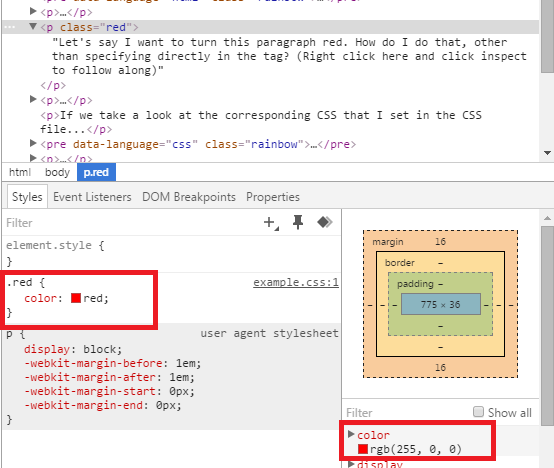

Hey everyone,
There seems to bee a lot of people having trouble with how exactly this whole CSS thing works. I'm going to try to make that a little clearer, and break down the process of making a dropdown menu. To follow along, you'll want to be using inspect/inspect element where I tell you (although I will also provide images). To do that, right-click on the item in question and select "inspect" or something similar from the drop-down.
When a browser opens an HTML file, it parses through the whole thing, making decisions about how to display the page. One of the things you can do to influence that is giving it a CSS file to work with. You do so as follows (please ignore the xmp tags):
<html> <head> <link href="example.css" rel="stylesheet"> </head> <body> ... </body> </html>
So, what exactly does this do? The browser will go through your html file, find everything the css file applies to, and take the styling from the css file to change the styling on relevant html tags.
Let's say I want to turn this paragraph red. How do I do that, other than specifying directly in the tag? (Right click here and click inspect to follow along)
Well, one method is to set a class identifier on that paragraph. If you're inspecting the previous paragraph, you'll note I set its class to "red"
If we take a look at the corresponding CSS that I set in the CSS file...
.red {
color:red;
}
Here, we're saying: take any element with the class (using a . to denote that it's a class) of "red," and set its color attribute to red.
Calling it "red" specifically isn't important; I could have called it "paragraph-colored" or even "sdjlfkgSDGJ," so long as I refer to the class appropriately in the CSS.
If you're following along in the element inspector, you'll also notice that it tells you the CSS associated with an element, like so:
You can use the element inspector like this to see what's being applied to a tag, and where from. Here, we see this p tag is getting the color red from the .red css selector in example.css, and also we see the default css it's inheriting from the presets for p tags (display: block, plus the -webkit-margin settings)
If I wanted to use a different class name for the paragraph, I would just need to make sure there was a matching class name in the CSS. This paragraph is blue, but the class name is SDGFjhj.
You can use classes multiple times! This paragraph is red, because it uses the same class as the red paragraph up above.
This is just an application of a couple different CSS styles and selectors. It's similar to how a link will become underlined when you hover over it, except instead of underlining text, we're hiding and showing it.
Let's break it down. First, we need to encompass the entire drop-down in some sort of tag, so that we can identify which things are part of the drop-down. A good general-use tag for things like this is a div tag, but let's keep it simple and use an unordered list (ul).
Now, this in and of itself isn't enough html to make the drop-down. We need to be able to distinguish the drop-down content from the text you hover over to display the drop-down.
So let's encompass the drop-down text in another tag. This time we'll use a div tag, which does very little in the way of formatting and mostly serves to delineate areas of text like we're doing now
Let's take a look at how that html looks on the page, so we understand better just how much CSS is going to affect it. I'm removing the "dropdown" id from the ul, so the page's CSS doesn't affect it:
Whoops! We probably don't want those menu items to be vertical like that. Let's get them next to each other. To do that, we'll delve back into the CSS
This selector is going to be a little complicated, so let's take it step by step.
First off, we want to be selecting the li tags, since those are the tags we want to be placed next to each other.
li {
}
If we left it at that, though, we'd be selecting every li on our page! What if we had another list that we wanted to display normally?
So we need to be more specific with our selector. CSS allows you to have "nested selectors," by putting selectors with spaces inbetween them.
What we want to be selecting here is any li tag, inside of a tag with the id "dropdown." That way, we don't accidentally affect other lists:
#dropdown li {
}
That's better. Now we'll only be selecting li tags inside our dropdown tag (the ul).
Finally, we need to add CSS to our CSS file that will cause the li tags we're selecting to display side-by-side. We can do that with display:inline-block;
#dropdown li {
display:inline-block;
}
So, let's take a quick look at what that does:
Great! Now we can get to work on the dropping-down portion of this dropdown menu.
"Drop-down" is a little bit of a misnomer: nothing is actually going to be dropping down. We're just going to make it so the text to be "dropped down" is hidden. Then, we'll make it so it reappears on the page when we perform an action (in this case, hovering over the hover text).
First off, let's hide some text. We do that with display:none;
We need to be selecting just the drop-down content. Now, technically, we could select this using nested selectors: #dropdown li div. But that's unnecessarily complicated. Why don't we modify our html?
Now we can just use the class selector .dropdown-content
So, let's hide that text by combining those two things:
#dropdown-content {
display:none;
}
If you inspect element on the hover text above, you'll notice that the drop-down text is still there; it's just had its display set to none.
Now we need to make it reappear again, but only when we hover over the hover text. Before we do that, let's quickly set the position of the li to relative and the position of the dropdown-content to absolute. This will prevent things from moving around undesirably as content is hidden and shown.
#dropdown li{
display:inline-block;
position:relative;
}
.dropdown-content {
display:none;
position:absolute;
}
Ok! Now, we just need to add one more selector, and we'll be all set.
For this, we want to be selecting an li inside #dropdown, but only if it's being hovered over.
We do this with :hover. So in this case, the entire selector would be #dropdown li:hover
That'll work great, but anything we put in there would affect the li being hovered over. We don't want that - we want to be affecting the dropdown-content div tag inside the hovered-over li.
We do that like so: #dropdown li:hover .dropdown-content
Notice the lack of a space in li:hover and the space between li:hover and .dropdown-content. This is very important!
So this is the CSS we have so far:
#dropdown li{
display:inline-block;
position:relative;
}
.dropdown-content {
display:none;
position:absolute;
}
#dropdown li:hover .dropdown-content{
}
Essentially, the last bit is saying: Find a tag of class dropdown-content inside a hovered-over li inside a tag of id dropdown
This works because CSS is dynamic. As you hover over things on the page, the browser is able to recognize that and apply any relevant CSS
We can finish this up by just adding display:inline-block; into the last CSS selector, like so:
#dropdown li{
display:inline-block;
position:relative;
}
.dropdown-content {
display:none;
position:absolute;
}
#dropdown li:hover .dropdown-content{
display:inline-block;
}
And that's that! Put whatever you want in the li and in the dropdown-content div - text, links, images, anything at all - and this should continue to work.
If you have any questions, please come to my TA hours or Jaime's office hours, or shoot either one of us an email. We're here to help!